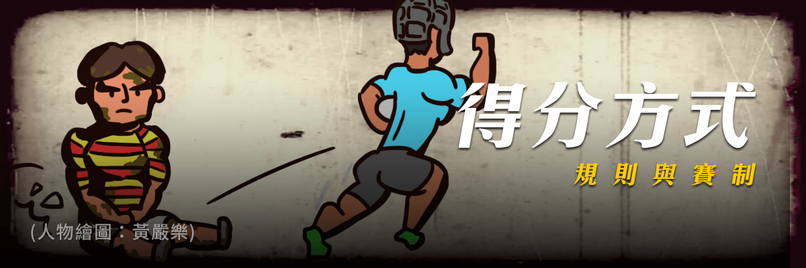

得分方式

1. 達陣（try，得五分）：帶球的球員衝過球門線後，比賽並不會暫停，防守方仍然可以搶奪。直到達陣的球員有持球向下觸地或壓球觸地的動作，並要讓裁判清楚地看到，才算得分（而在達陣區內撿起球的瞬間並不算達陣）。在橄欖球中的ground指的是壓球觸地的動作。touch
down專指防守方在自己的達陣區裡壓球觸地，就成為死球（dead）。
2. penalty try（觸地得分球的罰球：五分）：進攻球員可達陣，但被防守球員犯規阻撓，裁判可以判給讓進攻球員在球門柱之間觸地得分。
3. 達陣後加踢（conversion goal，兩分）：球員達陣後，得分的球隊得到一次射門的權利。射手必須站在達陣觸地點的垂直延伸線上，可用定位踢（place
kick）或落地踢（drop kick）。射門的位置是由達陣觸地的位置來決定。
4. 罰踢射門（penalty goal，三分）：當對手犯規時，裁判可以判給球隊罰踢的機會。罰踢的球員可以選擇直接射門得分或是選擇並列爭球。
5. 落地射門（dropped goal，三分）：任何一個球員可以從場上的任何一個地方以落地踢的方式射門，但如果沒有射門得分就會導致進攻換邊（turnover）。落地射門通常用在難以突破對手防線時、或最後讀秒的關頭。
6. 自由踢（free kick）不可以直接射門得分。
7. 球被帶入或踢入對方得分區時，攻方球員持球將其觸地，可得5分。觸地得分之後，攻方可以由任一位球員在觸地點與得分線的垂直線上任一點再射門一次，若射入球門可再得2分。比賽中持球員可以用踢落地球（drop
kick）射門，射入可得3分。
8. 對方犯規後的定點罰踢可以直接射門，射入可得3分。